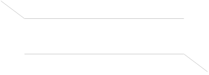
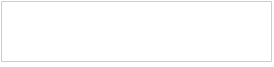
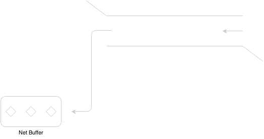
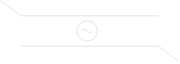
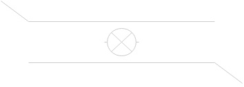

craft-atom-nio: Event Model Illustration
May 19, 2014 by mindwind
craft-atom-nio is base on event-driven and each event is related to a Channel, so how many type of event we have.
All the events are illustrated in the table below:
1. CHANNEL_OPENED
When channel has been opened, fire this event.

2. CHANNEL_CLOSED
When channel has been closed, fire this event.

3. CHANNEL_READ
When channel has read some data, fire this event.
4. CHANNEL_FLUSH
When channel would flush out data in it, fire this event.
5. CHANNEL_WRITTEN
When channel has written some data, fire this event.

6. CHANNEL_IDLE
When channel has no data transmit for a while, fire this event.

7. CHANNEL_THROWN
When channel operation throw exception, fire this event.

Dispatch Event
As mentioned above, an event would be fired when something occurs. It must be handle by the IoHandler,
the IoHandler is a SPI interface which should be implemented by the component user. The action event dispatch
means hand over the event to IoHandler.
How to dispatch? A SPI interface NioChannelEventDispatcher provide this function, and by default we have two kinds of event dispatcher implementor.
1. NioOrderedDirectChannelEventDispatcher
Dispatch event on current thread.
2. NioOrderedThreadPoolChannelEventDispatcher
Dispatch event on a new thread pool.